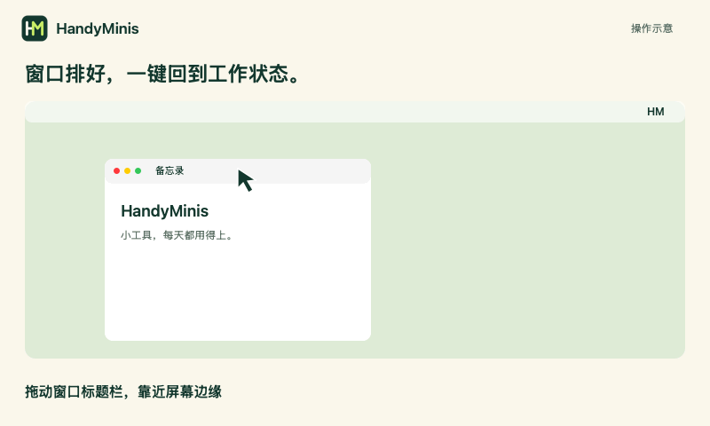

HANDYMINIS FOR macOS
小工具，
每天都用得上。
HandyMinis 是一组放在 macOS 菜单栏里的顺手小工具。找回复制过的内容，给截图打码并在本机识别文字，或把窗口贴靠到屏幕边缘。
剪贴板与截图演示使用实际应用界面和示例数据；窗口布局为原生示例窗口的位置变化示意。各版本支持的功能见 发布说明。
找回复制内容，整理常用语和文件
按 ⌘⇧C 打开剪贴板，搜索之前复制的内容。选中文本后按 ⇧↵ 去掉格式后粘贴，或用 ⌃↵ 存为常用语。文件可以放进「文件暂存」，需要时拖到目标应用。

给截图打码，在本机提取文字
按 ⌃⌘A 框选截图。用 M 加马赛克，或用 B 实心遮挡。按 X 识别中英文，选中文字后用 ⌘C 复制。

整理窗口，保存并恢复布局
把窗口拖到屏幕边缘或四角贴靠。排好之后，从菜单栏的「窗口布局」保存现在的位置和大小。再次打开相应窗口后，选择已保存的布局即可恢复。

安装和权限
需要 macOS 14 或更新版本，支持 Apple 芯片和 Intel Mac。下载 DMG 后将 HandyMinis 拖入「应用程序」，从菜单栏的 HM 图标打开设置。
截图需要屏幕录制权限。自动粘贴和窗口贴靠需要辅助功能权限。安装与首次打开说明见 GitHub README。